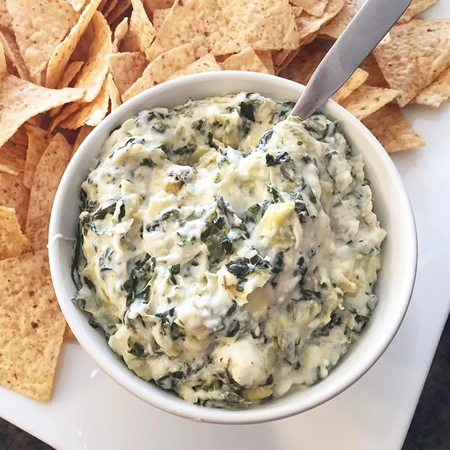

This spinach artichoke dip is delicious. It's so cheesy and fragrant. If you don't like artichokes, don't worry — you'll never know they're in there! My only question is: Is it okay to eat it with a spoon right out of the dish?
Spinach artichoke dip is the best (and most delicious) way to get any party started. This crowd-pleasing spinach artichoke dip recipe is sure to be a hit with your friends and family.